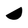
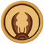
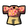

Badges
Badges, also known as Accolades and Achievements, Are a visual representation of the players milestones and accomplishments. They can be found in gameplay located on a scout's equipped sash when obtained. As the player collects more of these badges they will unlock a variety of different cosmetic gear. A full list of all badges can be found in game within the accolades menu along with the amount of times the player has climbed to the peak.
| Icon | Badge | Criteria | Reward |
|---|---|---|---|
.webp) |
24 Karat Badge | Offer The Kiln a worthy sacrifice. Steps (contains spoilers): While in the Mesa, locate the entrance to the Tomb. Navigate the parkour puzzle and collect the Ancient Idol at the end. Carry the idol to the Kiln where it must be dropped into the lava. | Bing Bong Beanie |
| Aeronautics Badge | Achieve flight. Requires a total of six Balloons, individual or from Balloon Bunch. | Astronaut. Astronaut Outfit | |
| Alpinist Badge | Climb past the Alpine Biome. | Aviator Hat | |
| Animal Serenading Badge | Play the Bugle for a Capybara. | Crab Hat | |
| Arborist Badge | Reach the top of a really big tree. Big trees are found in the Tropics. | Real Eyes | |
| Astronomy Badge | Look a little too closely at the blazing sun. Use the Binoculars to look at the sun in the Mesa. | Matrix Glasses | |
| Balloon Badge | Escape the island without taking fall damage. | Balloon Outfit | |
| Beachcomber Badge | Climb past the Shore Biome. | Straw Hat | |
| Bing Bong Badge | Escape the island with Bing Bong. | Propeller Hat | |
| Bookworm Badge | Read all of Scoutmaster Myres's journal entries. | Broken Glasses | |
| Bouldering Badge | Place 10 Pitons. | Anime Eyes | |
| Bundled Up Badge | Climb past the Alpine Biome without ever having more than 20% Cold. | Ice Blue Ice Pink | |
| Clutch Badge | Revive 3 scouts in a single expedition. | Sailor Hat | |
| Cooking Badge | Cook 20 meals at campfires. | Chef Hat | |
| Cool Cucumber Badge | Climb past the Mesa Biome without ever having more than 10% heat. | Cowboy Outfit Galloon Hat | |
| Daredevil Badge | Shoot across the Mesa canyon in a Scout Cannon. | Racing Helmet | |
| Emergency Preparedness Badge | Heal an unconscious friend with an item to save them from death. | Sailor Outfit | |
| Endurance Badge | Climb 50m upwards without touching the ground once. | Ninja Headband | |
| Esoterica Badge | Obtain a Mystical item. | Wizard Hat | |
| First Aid Badge | Heal your friends for 100 points of Injury in a single expedition. | Medic Hat | |
| Foraging Badge | Eat 5 different berries in one expedition. | Wacky Mouth | |
| Gourmand Badge | Escape the island after cooking and eating a Half-Coconut, Honeycomb, Yellow Winterberry and an Egg. | Aggro Mouth Aggro Eyes | |
| Happy Camper Badge | Recieve 5 Morale Boosts from campfires. | Cookie Outfit | |
| High Altitude Badge | Climb 5000m in total. | Bandana | |
| Knot Tying Badge | Place 100m of rope in a single expedition. | Bow | |
| Leave No Trace Badge | Escape the island without placing anything on the mountain. | Groucho | |
| Lone wolf Badge | Escape the island in a solo expedition. | Wolf Ears | |
|  | Megaentomology Badge | Survive an antlion attack. | Scar 2 |
| Mentorship Badge | Have a 1v1 with the Scoutmaster. | Inverted Eyes | |
| Mycology Badge | Eat four different non-toxic mushrooms in a single expedition. | Mushroom Hat | |
| Naturalist Badge | Escape the island without eating any packaged food. | Midsummer Hat | |
| Needlepoint Badge | Have a lot of Cactuses stuck to you. Requires sticking five Cacti to the player. | Sun Hat | |
| Nomad Badge | Climb past the Mesa Biome. | Desert Hat | |
| Participation Badge | Have a friend escape the island without you. | Castaway Outfit | |
| Survivalist Badge | Escape the island without ever losing consciousness. | Scoutmaster Outfit | |
| Toxicology Badge | Restore 200 total Poison by using items. | Vamp | |
| Trailblazer Badge | Climb past the Tropics Biome. | Fedora | |
| Ultimate Badge | Catch a Flying Disc from 100m away. | Visor | |
| Volcanology Badge | Climb past the Caldera Biome. |  Tropical Outfit |